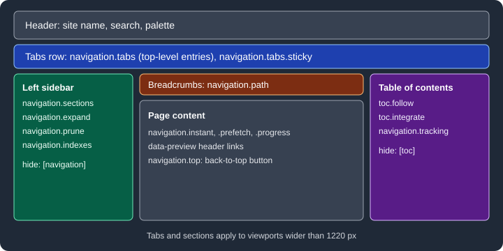

Navigation
|
This content was generated with the assistance of AI and should be verified against the official documentation before being relied on in production. |
This page was written against Zensical 0.0.72 (the latest release on PyPI, published 2026-10-23, still marked alpha) and
checked on 2026-10-26. Navigation in Zensical is controlled by two things: the nav setting, which says which pages
form the menu and in which order, and a set of theme feature flags, which say how the menu is drawn and how pages are
loaded. The examples use the Pocket Units documentation and were built with Zensical 0.0.72.
What navigation is made of
Without any configuration, the left sidebar is generated from the folder structure and the content of the Markdown
files under docs_dir. That is enough for small sites. As soon as order, titles or grouping matter, an explicit nav
list is declared. Features then change how the result looks:
-
the top-level entries can become tabs below the header;
-
the top-level sections can become groups in the sidebar;
-
a breadcrumb path can be shown above the page title;
-
the HTML of the sidebar can be pruned so each page carries only the visible items;
-
a section can have its own landing page;
-
the table of contents on the right can follow the reader or move into the left sidebar;
-
pages can be loaded without a full reload, and links can show a preview of their target.

The figure shows which region of the page each setting controls.
Explicit navigation
nav is a list under [project] in zensical.toml (or under nav: in mkdocs.yml). Paths are relative to
docs_dir. A plain string is a page whose title comes from the page itself. A table with one key gives the entry a
custom title. A key whose value is a list is a section. A string that does not resolve to a Markdown page is treated as
a URL, which gives an external link in the menu.
[project]
site_name = "Pocket Units"
site_url = "https://example.org/pocket-units/"
nav = [
{ "Home" = "index.md" },
{ "Guides" = [
"guides/index.md",
"guides/getting-started.md",
"guides/convert-lengths.md",
] },
{ "Reference" = [
"reference/api.md",
"reference/units.md",
] },
{ "Changelog" = "changelog.md" },
{ "Source code" = "https://example.org/pocket-units/source" },
]Source: Zensical docs: Navigation
With this configuration the build produced five top-level entries, in this order: Home, Guides, Reference, Changelog and Source code. The last one is a link to the external URL.
A page can be kept out of the menu without being removed from the site. Pages listed in not_in_nav are still built,
are still searchable and still appear in the sitemap, but they are not part of the default navigation. Pages matched by
draft_docs are left out of the navigation too, including in the preview server. In the 0.0.72 release not_in_nav
is a multiline string with one pattern per line, not a TOML array: an array makes the build stop with the message
Error: 'not_in_nav' must be a multiline string.
[project]
not_in_nav = """
drafts.md
"""Source: Zensical docs: Basics
In the example build, drafts.md was written to site/drafts/index.html and did not appear in the menu.
Enabling features
Navigation features are names in the features list under [project.theme]. The sections that follow explain each
flag. This is the list used by the Pocket Units example.
[project.theme]
features = [
"navigation.instant",
"navigation.instant.prefetch",
"navigation.instant.progress",
"navigation.tracking",
"navigation.tabs",
"navigation.tabs.sticky",
"navigation.sections",
"navigation.path",
"navigation.prune",
"navigation.indexes",
"navigation.top",
"toc.follow",
]Source: Zensical docs: Navigation
The same list under theme: and features: works in mkdocs.yml. The build of the full example reported
No issues found.
Instant navigation
With navigation.instant, the theme intercepts clicks on internal links and loads the next page with an XHR request
instead of a full page load, so the site behaves like a single-page application. The search index survives from one
page to the next. The feature relies on sitemap.xml, so site_url must be set; without it, instant navigation and
instant previews do not work.
Two companions refine it:
-
navigation.instant.prefetchfetches a page when the pointer hovers over a link. The documentation labels it experimental. -
navigation.instant.progressshows a progress bar at the top of the page, but only when loading takes longer than 400 ms.
navigation.tracking is a related flag: it keeps the address bar in sync with the active anchor of the table of
contents, so the current URL always points at the section the reader is looking at.
Because pages are swapped without a reload, JavaScript added through extra_javascript must not assume it runs once
per page. The customization page of the official documentation describes the document$ observable for that case; see
Theming and Customization.
Instant previews
Instant previews show a small card with the target section when the reader hovers over a link. They are experimental,
need site_url, and work only for links to headings on other pages (not for other elements that have an id).
The recommended way to enable them is the zensical.extensions.preview Markdown extension, which lists the pages whose
links get a preview. targets selects the pages that previews link to, which is what the documentation recommends;
sources selects the pages that show previews and applies to all pages when it is omitted. Exclusion wins over
inclusion.
[[project.markdown_extensions.zensical.extensions.preview.configurations]]
targets.include = ["guides/*"]Source: Zensical docs: Navigation
A single link can also opt in with the data-preview attribute, written with the Attribute Lists syntax of Markdown.
See the [Metres to feet](../guides/convert-lengths.md#metres-to-feet){ data-preview } section.Source: Zensical docs: Navigation
In the built page the anchor was rendered as <a data-preview="" href="../../guides/convert-lengths/#metres-to-feet">.
The card itself is drawn by the browser script and was not checked visually here.
Tabs
navigation.tabs turns the top-level entries of nav into a row of tabs below the header. In the example build the
tab row contained Home, Guides, Reference, Changelog and Source code. navigation.tabs.sticky keeps the row fixed
below the header while the page scrolls and requires navigation.tabs. Tabs are drawn only on viewports wider than
1220 px; narrower screens keep the single menu.
Sections
navigation.sections renders the top-level sections as always-open groups in the sidebar rather than collapsible
items. This too applies only above 1220 px. When it is combined with navigation.tabs, the tabs take the top level,
so the groups are made from the level-2 items.
navigation.expand goes the other way: it expands every collapsible subsection by default.
Breadcrumbs
navigation.path adds a breadcrumb trail above the page title, which is useful on small screens where the sidebar is
collapsed. For guides/getting-started.md the generated list was Home and Guides, followed by the page. A page can
hide its own trail through front matter:
---
hide:
- path
---
# Convert lengthsSource: Zensical docs: Navigation
This front matter was not executed here; the build of the example used hide: [toc] on the same page instead.
Pruning
By default, every page repeats the HTML of the entire navigation tree. navigation.prune includes only the items that
are visible for that page, such as the open sections, so pages are smaller. The documentation states a reduction of
33 percent or more in total site size for large sites. In the tiny example the page guides/getting-started went from
15909 bytes to 14916 bytes. The flag is not compatible with navigation.expand, because expanded sections would have
to be present in full. The 0.0.72 build accepted both flags together without reporting an error, so the conflict is a
rule to follow, not one the tool enforces.
Section index pages
With navigation.indexes, an index.md (or README.md) placed first in a section becomes the landing page of that
section: the section title in the sidebar links to it instead of only expanding. In the example, guides/index.md is
the first entry of the Guides section and serves as its landing page. The flag is not compatible with toc.integrate;
a combined build also raised no error in 0.0.72.
# Guides
Task-oriented guides for Pocket Units.Source: Zensical docs: Navigation
Table of contents
The table of contents lists the headings of the current page on the right. Three settings change it:
-
toc.followscrolls the sidebar so the active heading stays visible in a long page; -
toc.integratemoves the table of contents into the left sidebar; -
hidein the front matter removes it for one page, or removes the sidebar too.
---
hide:
- navigation
- toc
---
# Convert lengthsSource: Zensical docs: Navigation
navigation.top adds a back-to-top button that appears when the reader scrolls up after scrolling down. Additional
navigation, such as previous and next links, is configured in the footer; the official documentation points to its
Footer page for that.
Wider content
The content area is limited to about 80 to 100 characters per line. A stylesheet registered with extra_css can widen
it.
.md-grid {
max-width: 1440px;
}Source: Zensical docs: Navigation
Use max-width: initial; to stretch the content to the full screen. This stylesheet was not built in the example.
Pitfalls and version notes
| Situation | Behaviour |
|---|---|
|
They depend on |
|
Documented as incompatible; no build error in 0.0.72. |
|
Documented as incompatible; no build error in 0.0.72. |
|
Build stops: the value must be a multiline string. |
Tabs and sections on narrow screens |
Not drawn; they apply above 1220 px. |
|
Experimental and may change while Zensical is in the 0.0.x series. |